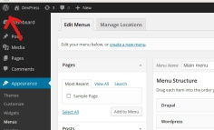

Se familiariser avec l'interface de Wordpress
La barre d'administration
En cliquant en haut à gauche de votre page WordPress sur le bouton "Menu", vous accéderez à la barre d'administration vous donnant accès aux options de votre site.

Consignes
Le design
En partant de votre identité graphique (existante ou élaborée au début du parcours), intégrez le logo et le titre de votre site dans l'entête de page (qu'on appelle aussi le "header"), puis choisissez le Design (via la barre d'administration) le plus adapté à votre identité graphique (couleurs, polices d'écriture...)
Le menu de navigation
En suivant le plan de site que vous avez élaboré dans la préparation, créer les rubriques et sous rubriques de votre site.
(Voir vidéo ci-dessus)